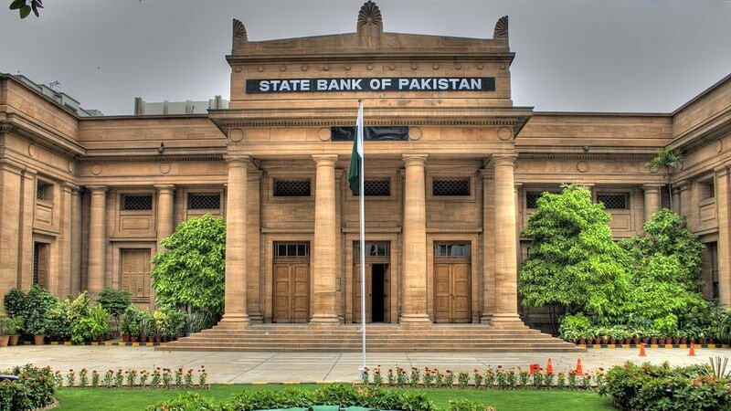
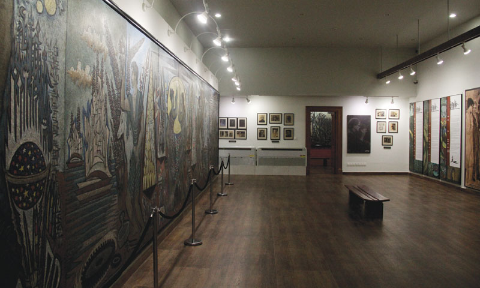
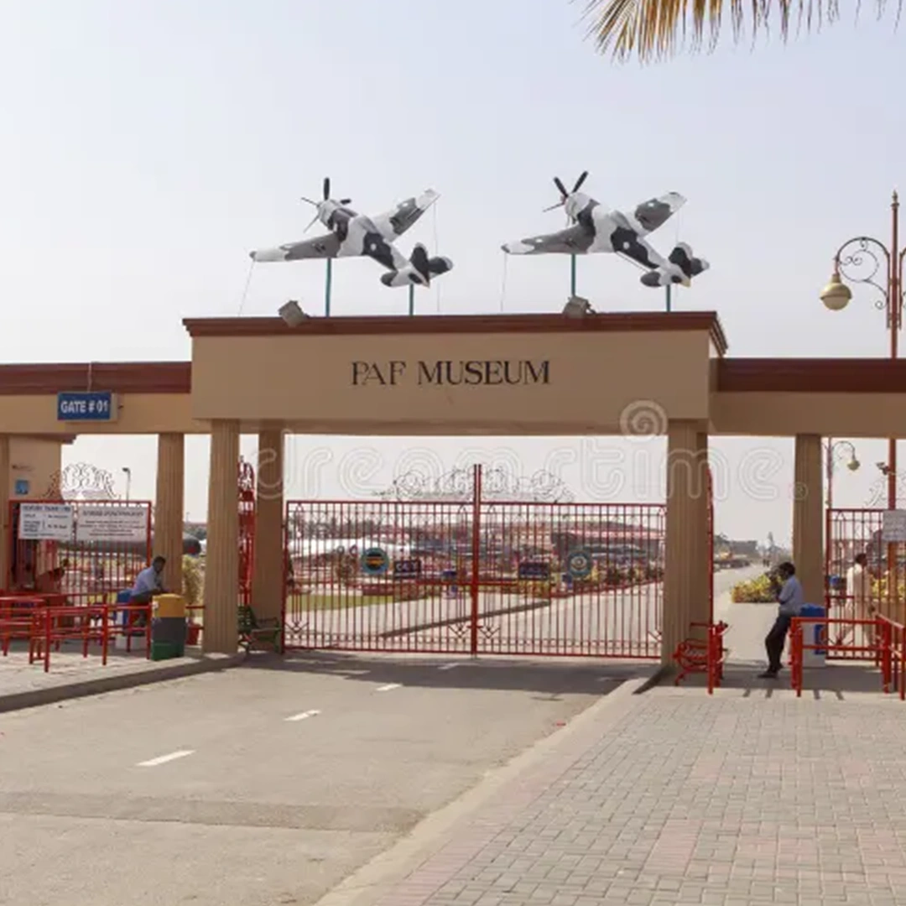
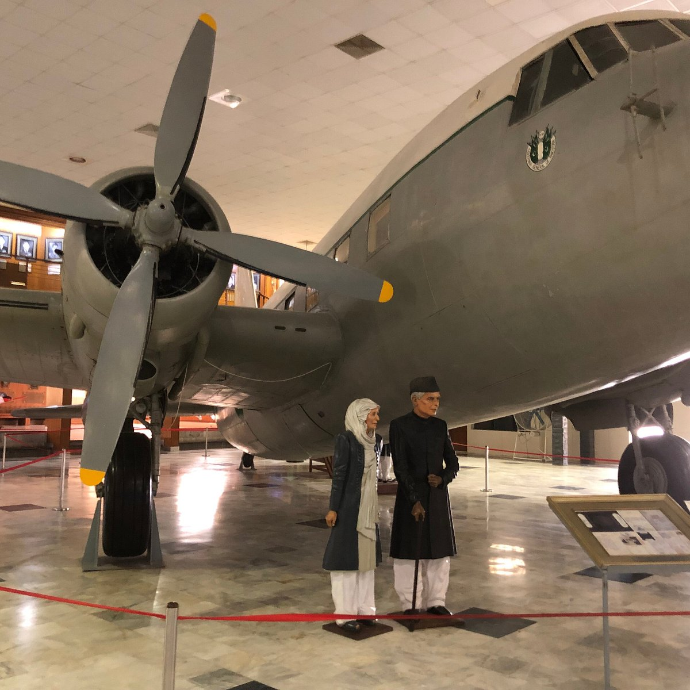

Museums & Institutions of Sindh
Museums hold a different kind of history than forts and palaces — one that's carefully preserved behind glass, waiting to be studied rather than walked through. This page covers two places, the State Bank of Pakistan Museum and PAF Museum, where Sindh's stories are told through the objects, art, and artifacts on display.
The State Bank of Pakistan
When I visited the State Bank of Pakistan Museum, I learned it's connected to the place where the country's currency is made and preserved. Inside, there's also an art section, which I found splendid to walk through. Seeing the history of Pakistan's currency displayed alongside artistic pieces made it feel like more than just a bank — it felt like a place where finance and culture meet. It was genuinely a wonderful experience, and one I'd recommend to anyone curious about how a nation's economic history is told through objects rather than textbooks.


PAF Museum
The PAF Museum, located at PAF Faisal Base in Karachi, is a military heritage museum showcasing an extensive collection of vintage aircraft, weapons, and historical artifacts connected to the Pakistan Air Force. Among its exhibits is a display honoring Quaid-e-Azam Muhammad Ali Jinnah alongside his sister, Fatima Jinnah, connecting the museum to Pakistan's founding history as well as its military heritage. Beyond the exhibits, it also functions as a family recreational space, with green gardens, children's rides, and dining areas. It offers a unique blend of military history, national memory, and public leisure, making it a distinctive stop compared to Sindh's more traditional museums.

